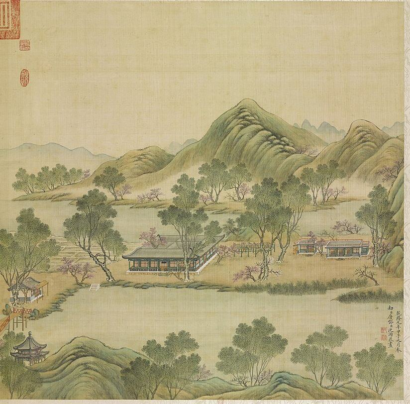
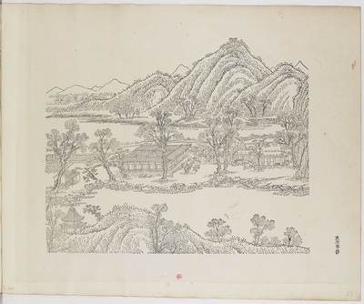
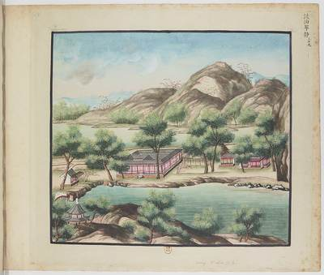
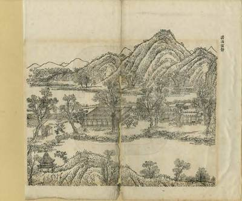
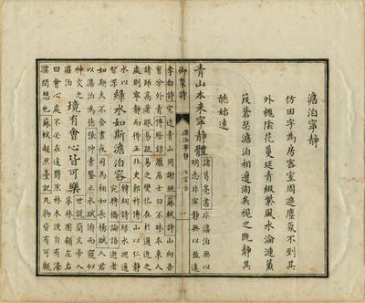

澹泊宁静Placid, Contented, Peaceful, Quiet


What it was
澹泊宁静 Danbo Ningjing, "Placid and Calm", is the rice-field scene east and a little south of 日天琳宇 Ritian Linyu: paddies all round, ringed by water, with at the centre a hall on the plan of the character 田, four gates, and towers on its east and north sides; the north tower's main room bears the name (S05 j81:29a; E1633). It stood by 1727 (S361 v2 p.182; E1640; S310 rec. 2579). West of it, in a separate wall, stood the seven-bay 多稼轩 Duojia Xuan facing south and a group of farm-themed halls, named in ten poems of 1759 and repaired in 1760 (S05 j81:30b-33b; E1620; E1647); the S361 editors file this group under the next scene, 映水兰香 Yingshui Lanxiang (S361 v2 p.185; E1670). Qianlong watched the harvest from 稻香亭 Daoxiang Ting here (E1651, E1652). It was burned by British troops on 18-19 October 1860 (E0485); digs of 2020-2022 exposed the whole base of the 田字房 Tianzi Fang, with heavy burning on base, courts and paths that the excavators link to that fire (S137; S139; E1643, E1644).
The leaf of 1744, its poem and preface
Leaf 20 of the 1744 album (P0020). Qianlong's preface: "仿田字為房密室周遮塵氛不到" (rooms built on the character 田, close rooms walled round, where the dust of the world does not reach). Outside are pagoda-tree shade and trailing flowers, rippling water, reeds; the name comes from Zhuge Liang's maxim 澹泊以明志 宁静以致远, to which the poem points as "武侯妙語" (S40, printed in S05 j81:30a-30b; E1618; the maxim itself opens Jiaqing's poem of 1804, E1628).
How it changed before 1860
日下旧闻考 lists the full group in the 1780s: 曙光楼 east, 翠扶楼 outside the east gate, the western court with 多稼轩, 观稼轩 on the paddy side, 怡情悦目 behind, 稻香亭, 溪山不尽, 兰溪隐玉, 水精域 south of the west pool, 静香屋, 招鹤磴, 寸碧 and 引胜, and 互妙楼 to the north (S05 j81:29a-29b; E1633). The 多稼轩 was repaired in 1760 ("结构年深稍葺治 栋宇从新", S361 v2 p.190; E1647). Jiaqing wrote on 澹泊宁静 in 1804 and 1807 (E1628, E1631). The excavators say the base agrees with the documents, with rooms 4.48 m wide and eaves columns 3.68 m (S139; E1643). Malone puts it about a quarter mile east of 日天琳宇 (S02 p.89; E1639).
A short mhymy record without sheet data (S310 rec. 2579) places the 田-shaped hall north of the 后湖, south-west of 舍卫城 Shewei Cheng, built by 1727. The 初编 has one page, p.266 (E1642). No 丈尺 was found in any Qing source read here; the documents the excavators compared with were not seen.
Building by building
| Hall | Bays | Roof | Storeys | Faces | Sources |
|---|---|---|---|---|---|
| 田字殿 Tianzi Dian | front about 7 (uncertain by one), with a plaque over the centre bay | single eaves; the ranges' roofs meet in valleys that read as a square of ridges behind the front, i.e. the 田 plan; ridges rolled, hip ends with upturned corners | 1 | S | S01, S05, S08, S137 |
| 曙光楼 Shuguang Lou | 2 | S05 | |||
| 翠扶楼 Cuifu Lou | 2 | S01, S05, S360 | |||
| 多稼轩 Duojia Xuan | 7 | S | S01, S05, S42, S360, S361 | ||
| 观稼轩 Guanjia Xuan | S01, S05, S361 | ||||
| 怡情悦目 Yiqing Yuemu | S01, S05 | ||||
| 稻香亭 Daoxiang Ting | S05, S360 | ||||
| 溪山不尽 Xishan Bujin | S05 | ||||
| 兰溪隐玉 Lanxi Yinyu | S05 | ||||
| 水精域 Shuijing Yu | S01, S05 | ||||
| 静香屋 Jingxiang Wu | S01, S05, S361 | ||||
| 招鹤磴 Zhaohe Deng | S05 | ||||
| 寸碧亭 Cunbi Ting | S05 | ||||
| 引胜 Yinsheng | S05 | ||||
| 互妙楼 Humiao Lou | 2 | S01, S05 |
and 1 buildings drawn on the plan without a name
The pictures
The woodcuts of 1745


The gouaches, 1750-92


The lithograph of 1887


Other pictures


Every picture, text and drawing, hall by hall, is in the 3D view's panel.
Inside
Plaques: 澹泊宁静 (Qianlong's hand) on the north tower; south gate 亦复佳, west gate 得山水趣, behind the north gallery 麦雨稻风, and 曙光楼, all Qianlong's; 多稼轩, 观稼轩, 怡情悦目, 稻香亭, 溪山不尽, 兰溪隐玉 in Yongzheng's hand (S05 j81:29b; E1633). Couplets of 多稼轩 (Qianlong): "風裊爐烟移晝漏 月臨書幌正宵衣" and "厥惟艱哉載芟載柞籌穡事 亦既勤止曰暘曰雨驗農時" (S05 j81:29b-30a). A copy of Lou Shu's 耕织图 Gengzhi Tu by Cheng Qi was kept in this group (S361 v2 p.185; E1670). Pot plum in 静香屋 ("盆梅几朵才舒蕊", E1654).
The garden around it
Rice paddies as far as the eye could see ("稻田彌望"), with water all round ("河水周環") (S05 j81:29a; E1633). Shade trees, flowers and reeds (E1618). In the west court: a rock stream, a bamboo-roofed pavilion, a pond of Rehe carp fed by a sluice (S05 j81:30b-33b; E1620); a real waterfall through an artificial rockery at 水精域 (E1653); a small rockery climbed to 寸碧亭 (E1658); 互妙楼 half up a hill (E1660); 招鹤磴, a stone stair named for calling cranes (E1656, E1657). The dig found pebble aprons and paddy soil of the imperial rice field (S137; E1644).
What survives
Three seasons from November 2020 by the park, the 北京市文物研究所 and Peking University exposed the whole base of the 田字房: 33 rooms each about 4.48 m square, gallery 1.28 m, the base standing about 0.55 m, with column bases, floor bricks, drains, steps and pebble aprons, all heavily burnt; paddy of the imperial rice fields was found too (S139; S137; S138). The scene measures about 140 m N-S by 160 m E-W, 26,000 m2, with 1,350 m2 of buildings (S139).
Excavations and surveys
No excavation or survey of its remains found in what we read.
Reconstructions by others
Modern interpretation, not evidence, and never a source for a size or a position here.
- 澹泊宁静 (caption 谵泊宁静 in a gallery) (, render) View at thepaper.cn
- “机械臂展示圆明园数字化复原视频”, “圆明·交融” exhibition (中央美术学院圆明园研究中心, video) View at news.bjd.com.cn
What is known of its size
| Part | What | Size | How | Grade | Source |
|---|---|---|---|---|---|
| 澹泊宁静 scene, whole | Court depth | 140 m ± 10 | a survey or Qing drawing | B | S139, 中国日报网 2020-12-16, para. 2 |
| 澹泊宁静 scene, whole | Court width | 160 m ± 10 | a survey or Qing drawing | B | S139, 中国日报网 2020-12-16, para. 2 |
| base | Platform height | 0.55 m ± 0.05 | a survey or Qing drawing | B | S137, news 2022-11-04 (E1644), search extract |
| eaves columns | Column height | 3.68 m ± 0.05 | a survey or Qing drawing | B | S139, news 2020-12-16 (E1643), search extract |
| 田字房 base 台基 as it stands | Platform height | 0.55 m ± 0.05 | a survey or Qing drawing | B | S137, E1644 |
| 田字房 eave columns 檐柱 | Column height | 3.68 m ± 0.05 | a survey or Qing drawing | B | S139, 中国日报网 2020-12-16, para. 4 (张中华) |
| study | Frontage | 3.2 m ± 1 | a survey or Qing drawing | C | S361, v2 p.195 (E1655), Qianlong 1791 |
| the scene's outline on the plan | Extent, long side | 231 m ± 10 | b plan or ruin | C | S01, layers/scenes_1860, UTM 50N, minimum rotated rectangle |
| the scene's outline on the plan | Extent, short side | 64 m ± 10 | b plan or ruin | C | S01, layers/scenes_1860, UTM 50N, minimum rotated rectangle |
| island I005 | Island, short side | 101 m ± 10 | b plan or ruin | B | S01, layers/islands_1860, UTM 50N, minimum rotated rectangle |
| island I005 | Island, long side | 267 m ± 10 | b plan or ruin | B | S01, layers/islands_1860, UTM 50N, minimum rotated rectangle |
| the scene's outline on the plan | Area | 8500 m² ± 900 | b plan or ruin | C | S01, layers/scenes_1860, UTM 50N, polygon area |
All 19 figures
| Part | What | Size | How | Grade | Source |
|---|---|---|---|---|---|
| scene | Scene extent ew ns | 150 m ± 10 | a survey or Qing drawing | B | S139, news 2020-12-16 (E1643), search extract |
| gallery | Gallery width | 1.28 m ± 0.05 | a survey or Qing drawing | B | S137, news 2022-11-04 (E1644), search extract |
| room | Room square | 4.48 m ± 0.05 | a survey or Qing drawing | B | S137, news 2022-11-04 (E1644); S139 (E1643), search extract |
| 田字房 gallery 廊 | Gallery depth | 1.28 m ± 0.02 | a survey or Qing drawing | B | S137, E1644 |
| 田字房, each of the 33 rooms | Bay width | 4.48 m ± 0.02 | a survey or Qing drawing | B | S137, 中新网 2022-11-04; E1644 |
| island I005 | Island area | 18100 m² ± 1800 | b plan or ruin | B | S01, layers/islands_1860, UTM 50N, polygon area |
| water inside the scene's outline | Water inside the outline | 660 m² ± 70 | b plan or ruin | B | S01, layers/water_1860 within layers/scenes_1860 |
Sources cited on this page (12)
- S01 Plan of the Yuanmingyuan Imperial Garden-Palace, unknown artist, three hanging scrolls, ink and colour on paper, 177 × 253 cm together
- S02 Carroll Brown Malone, History of the Peking Summer Palaces under the Ch'ing Dynasty, Illinois Studies in the Social Sciences XIX, Urbana 1934; reprint Paragon 1966
- S05 《日下旧闻考》 Rixia jiuwen kao (Yu Minzhong et al.), juan 80-85 (Round 20 also juan 76-79, 84-87 and 98-100: the gardens round ours, the roads, 郊坰), Kanripo KR2k0036, WYG base
- S08 圆明园四十景图 Forty Scenes album, Tangdai and Shen Yuan, 40 leaves, BnF Estampes RESERVE FT 6-B-9, one BnF record per leaf; poems Qianlong, calligraphy Wang Youdun
- S40 御制圆明园四十景诗 / 图咏
- S42 梦回圆明园 mhymy.com: 档案史料 reports (11301, 11446, 11467, 11480, 11559, 11828, 12205, 12324, 12600, 12613, 12739) and scene list /ymss/jqjs/ymy
- S137 中新网 徐婧, 澹泊宁静
- S138 光明日报 via 中新网, 澹泊宁静
- S139 中国日报网, 圆明园遗址考古有重大发现
- S310 梦回圆明园 mhymy.com, 档案史料 > 样式雷图档 /dasl/ysltd/: per-drawing records (图名, 图幅, 款式, 图纸性质, 绘制年代, 收藏机构, 排架编码) with a description, for drawings held by NLC 国家图书馆善本部, 故宫博物院图书馆, 清华大学
- S360 圆明园管理处 (attachment on the park's site), 圆明园百景史事分景汇编: dated records and imperial poems scene by scene, compiled from the Veritable Records and the emperors' collected poem
- S361 何瑜 (cover name; 编著 as on the volumes), 圆明园五朝御制诗文集注, vols 2-4 of the first four volumes, PDF on the park's site: the imperial poems and essays of five reigns by scene, wit